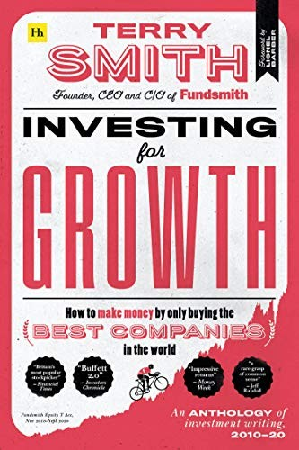

2010年，泰瑞·史密斯（Terry Smith）辞去在英国经纪与投行业的高管职位，创立自己的基金公司Fundsmith，允许普通投资者直接通过网站在线开户购买——这在当时的英国基金业并不常见。他给自己定的投资流程被总结成三句话，印在基金年度"股东手册"（Owner's Manual）的开篇："买好公司，不要多付钱，什么都不做。"（"Buy good companies. Don't overpay. Do nothing."）这只基金主要持仓集中在他认定拥有定价权、高资本回报率、业务不需要持续举债扩张的消费品、医疗和科技类公司，同时明确拒绝投资银行、石油天然气、矿业等资本密集或强周期行业。因为长期业绩和对"优质企业+长期持有"的执着，多家财经媒体——包括《福布斯》和Motley Fool——把他称为"英国的沃伦·巴菲特"。
《以增长为本的投资》2020年10月由哈里曼出版社（Harriman House）出版，原版收录史密斯2010至2020年写给基金持有人的年度信和发表于《金融时报》等处的文章，由《金融时报》前总编辑莱昂内尔·巴伯（Lionel Barber）作序，全书320页。第二版于2026年3月出版，新增2020至2025年的材料，把整部文集覆盖期延长至十五年。书里反复出现的论点是：多数主动型基金经理靠频繁调仓和择时创造不出超额收益，真正决定长期回报的是少数公司持续增长的自由现金流；“什么都不做”是在买入条件仍成立时减少无效交易，并非拒绝检查持仓。
书中衡量"好公司"的办法并不神秘：企业应当拥有难以复制的品牌、网络或分销优势，能把通胀造成的成本上涨转嫁给客户；利润最好来自大量、重复、小额的日常交易，而不是少数大项目；增长所需的厂房、库存和营运资本不能吞掉太多现金。史密斯尤其看重投入资本回报率与自由现金流之间的对应关系，因为会计利润若必须不断再投入才能维持，就很难成为股东可以拿走并继续复利的现金。他也用交易成本和资本利得税解释"什么都不做"：频繁卖出要求判断卖点，还必须同时找到更好的替代品，连续做对两次才有意义。2022年1月致基金持有人的信里，他批评联合利华把"使命宣言"强加给家常调味品品牌好乐门（Hellmann's）蛋黄酱："一家公司如果觉得有必要给好乐门蛋黄酱定义一个'使命'，在我们看来，那就是彻底丢了魂。"（"A company which feels it has to define the purpose of Hellmann's mayonnaise has, in our view, clearly lost the plot."）这不是一句孤立的俏皮话，而是他检验管理层是否把注意力放在产品、定价和资本配置上的例子。
目前没有出版社推出这本书的正式中文版。它不是一本逐步教人筛选股票的操作手册，更像是史密斯把十几年年报信和专栏文章按时间留下的投资档案：其中既有对指数基金、主动管理费用和并购会计的批评，也有对联合利华、帝亚吉欧、微软等公司具体决策的点评。文章写于不同市场阶段，读者因此可以对照后来发生的事，检查作者何时坚持、何时承认错误，以及一套高度集中的优质公司策略在估值上升、利率变化和短期落后时会承受什么压力。每篇文章保留原来的发表日期，也减少了作者用后见之明修改判断的空间，方便读者逐年核对。它真正提供的不是一张照抄的持仓表，而是一组可以拿财报逐项验证的判断标准。